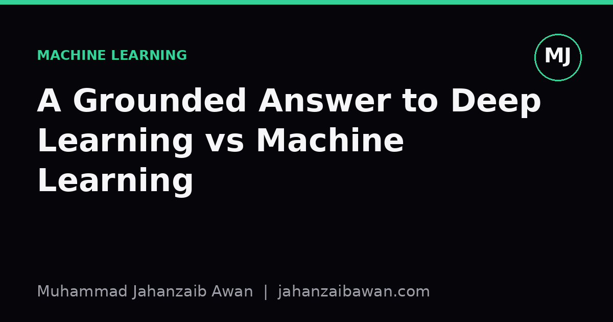

A Grounded Answer to Deep Learning vs Machine Learning
The distinction gets flattened into marketing talk far too often. Here is a practical way to think about when each approach actually earns its keep.

Why the question keeps coming up
Newcomers ask this question constantly, and I understand why. The terms get used almost interchangeably in casual conversation, yet the courses, tutorials, and job postings treat them as separate disciplines with separate tools. Someone starting out reads that deep learning powers image recognition and language models, then reads elsewhere that gradient boosted trees still win most tabular data competitions, and comes away with no clear sense of when to reach for which.
The confusion is understandable because the relationship between the two is hierarchical, not oppositional. Deep learning is a subset of machine learning, specifically the subset built on neural networks with multiple layers. Machine learning itself is the broader umbrella covering any method that learns patterns from data rather than following hand written rules, so that includes linear regression, decision trees, support vector machines, nearest neighbour methods, and gradient boosting, alongside neural networks. Asking which one is better is a bit like asking whether vehicles or lorries are better. The real question worth asking is narrower and far more useful: given this specific problem, this specific amount of data, and this specific structure in the inputs, which family of methods is likely to perform well and be maintainable.
I want to answer that narrower question properly rather than give a diplomatic non-answer, because newcomers deserve something they can actually act on. So the rest of this post works through a concrete example, pulls out the structural features that actually drive the choice, and ends with a decision process you can reuse.
A worked example: two problems, two very different answers
Imagine two tasks. The first is predicting whether a bank customer will default on a loan, using a spreadsheet with twenty columns: income, age, credit history length, number of existing accounts, and so on. You have eight thousand labelled rows. The second task is classifying whether a photograph contains a cat or a dog, using fifty thousand labelled images. Both are supervised classification problems, both have a clear target, and yet the right tool for each is quite different, and the reason comes down to the structure of the input and the volume of data.
For the loan default problem, the twenty columns are already meaningful features. Income is income, credit history length is credit history length, and a human expert could reason about why each one matters. A gradient boosted tree model, or even a well tuned logistic regression, can find the useful interactions between these variables without needing to invent its own representation of the data first. With only eight thousand rows, a deep neural network has very little to work with; it would need to learn useful internal representations from scratch, and with that little data it is prone to memorising noise rather than genuine patterns. In practice, on this kind of tabular problem, tree based methods usually match or beat neural networks, train in seconds rather than hours, and produce feature importance scores that a compliance officer can actually interrogate. That last point matters enormously in regulated industries like lending, where you often need to explain a decision, not just make it.
The image classification problem looks superficially similar, both have labels, both are classification, but the input is a grid of raw pixel values with no pre-defined meaning. There is no column called 'ear shape' or 'whisker count'; those concepts have to be discovered from the pixels themselves, through layers that learn edges first, then textures, then shapes, then whole object parts. This is precisely the kind of representation learning that classical machine learning methods are poor at, because they rely on a human engineering sensible features in advance, and nobody wants to hand engineer a whisker detector. With fifty thousand labelled images, there is enough data for a convolutional neural network to learn these layered representations itself, and the performance gap over a classical approach using hand crafted pixel statistics is typically large and easy to demonstrate even on a modest validation set.
The pattern underneath both examples is this: deep learning earns its complexity when the raw input lacks obvious structured features and there is enough data for the network to learn its own representation. Classical machine learning earns its keep when the features are already meaningful, the data is modest in size, or interpretability is a hard requirement rather than a nice to have.

Three practical signals, and the trap to avoid
From that worked example, three signals generalise well and are worth checking before you default to either approach. First, look at what the raw input actually is. Structured tables with human meaningful columns usually favour classical methods; unstructured signals like images, audio waveforms, or free text usually favour deep learning, because that is where representation learning pays off. Second, check your data volume honestly against the complexity of the model you are considering. A rule of thumb worth internalising, not a law but a useful heuristic, is that deep networks need substantially more labelled examples per parameter than classical models to avoid simply memorising the training set, so a small dataset is a strong signal to start with a simpler model regardless of input type. Third, weigh interpretability requirements. If a regulator, a clinician, or a customer needs a reason for a decision, classical models with transparent structure are usually easier to defend than a neural network, even though interpretability techniques for neural networks do exist and keep improving.
The trap I see newcomers fall into repeatedly is treating deep learning as a universal upgrade, the way a faster processor is almost always an upgrade. It is not that. A badly matched deep network on a small tabular dataset will frequently be outperformed by a boosted tree that took a tenth of the time to train and tune, and will be harder to debug when it goes wrong, because its failure modes are less legible. The newcomer who learns to ask 'what does my input actually look like, and how much labelled data do I genuinely have' before picking a model family will make better decisions than one who starts from 'which one is more advanced'.
A practical takeaway
My honest advice for anyone starting out is to build a strong, boring baseline first, almost regardless of the problem. For tabular data that usually means a gradient boosted tree or a regularised linear model, evaluated with a leakage-aware train, validation, and test split so the numbers you get actually mean something. For unstructured inputs like images or text, a simple baseline might be a small pretrained model rather than one trained from scratch, since starting from a network already trained on a large general dataset and fine tuning it on your smaller one usually beats building something from first principles. Once that baseline exists and is properly evaluated, you have a number to beat, and you can decide whether the added complexity, training time, and reduced interpretability of a deeper architecture is actually worth the improvement it buys you. Often it is. Sometimes it genuinely is not, and the honest answer is to keep the simpler model and move on to the next problem.